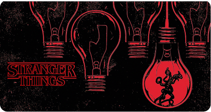

<!DOCTYPE html>
<html>

<head>
    <meta charset="UTF-8">
    <meta name="viewport" content="width=device-width, initial-scale=1.0">
    <title>Netflix: Sistema de recomendacion</title>
    <link rel="stylesheet" href="style.css">
</head>

</html>

<body>
    
    <section id="pantalla1" class="comienzo">
        <header class="header">
            
        </header>
        <div class="isis">
            <div class="titulillo">
                <h1>¿Cómo funcionan los sistemas de recomendación en Netflix?</h1>
            </div>
            <div class="subtitulillo">
                <h5>Diferentes contenidos en base a los datos de diferentes usuarios. Utilizando inteligencia
                    artificial.</h2>
            </div>
            <div class="boton">
                <button onclick="mostrarPantalla2()">Empezar</button>
            </div>
        </div>
    </section>
    <section id="pantalla2" class="ppal oculto">
        
        
        

        <h1>SISTEMAS DE RECOMENDACION</h1>
        <h2>Algoritmos de personalización de Netflix</h2>
        <p>Netflix recopila toda la información en su base de datos. Es más, en cada cuenta de Netflix se genera una
            base de comportamiento distinta para cada uno de los perfiles creados. De este modo, no se mezclan gustos,
            ni recomendaciones. Es decir, que las sugerencias que aparezcan en tu perfil, no tienen por qué ser las
            mismas que aparezcan en el perfil de tu hermano, tu mujer o de la persona con la que compartas la cuenta.  
            Netflix asegura que esa información que recopila no se comparte ni se vende a terceros, y que es
            exclusivamente para uso interno. Lo que se sabe hoy es que los datos son el nuevo oro y, en esto, los
            algoritmos de las grandes empresas tecnológicas son insanamente ricos. </p>
        <h5>Núcleos</h5>
        <div class="slide-container">
            <div class="contImage">
                
            </div>
            <div class="contImage">
                
            </div>
            <div class="contImage">
                
            </div>
        </div>
    </section>

    <!--  POP UP 1 -->
    <section id="popup1" class="popup hidden popup1">
        <div class="popup-overlay" onclick="closePopup('popup1')"></div>
        <div class="popup-content">
            
            <h1>Recopilación de datos</h1>
            
            <p>Para poder llevar a cabo estos sistemas de recomendación, la Inteligencia Artificial que utiliza Netflix,
                se
                encarga de recopilar ciertos datos relevantes para identificar los distintos perfiles y <br>poder
                personalizar las sugerencias. <br>
                De acuerdo con su política de privacidad, Netflix recopila datos que incluyen identificadores de
                dispositivos, ubicación geográfica, tipo de navegador y detalles que proporcionó el usuario para
                registrarse, como su dirección de correo electrónico e información de pago.
                Si usas Netflix en tu navegador, se pueden utilizar cookies para recopilar información sobre tus
                intereses. 
                Este sigue siendo el caso si se usa una tablet, smartphone o un dispositivo de transmisión a través de
                identificadores de dispositivo.
                Por otro lado, Netflix también conoce los hábitos de visualización de cada uno de sus usuarios.
                Este tipo de datos es fundamental para la personalización de la que tanto se enorgullece la plataforma,
                las
                recomendaciones personalizadas, las cuales se basan en lo que otras personas con gustos similares a los
                tuyos han visto en Netflix.

            </p>
            <div class="especifico">
                <p>Para calcular la probabilidad de que te gustaría un determinado título del catálogo, se basan en
                    varios
                    factores, entre ellos:
                    <br> - Tu interacción con el servicio (como el historial de visualización y las calificaciones
                    asignadas
                    a otros títulos).
                    <br> - Actividad de otros miembros con gustos y preferencias similares a los tuyos.
                    <br> - Información sobre los títulos, como género, categorías, actores, año de lanzamiento, etc.
                    Además de saber qué viste en Netflix, también tomamos en cuenta otros factores para personalizar las
                    recomendaciones. Algunos de ellos son:
                    <br>- A qué hora del día accedes a Netflix.
                    <br> - Qué idiomas prefieres.
                    <br> - Con qué dispositivos accedes a Netflix.
                    <br> - Cuánto tiempo le dedicas a un título de Netflix.
                    Cuando ves tu página de inicio de Netflix, lo que encuentras son títulos que sus sistemas
                    organizaron
                    con el objetivo de presentarlos en la mejor disposición posible para ti.
                    Cada página contiene varias capas de personalización. Por ejemplo, es posible que personalice lo
                    siguiente en una fila:
                    <br> - La elección de filas (por ej., Continuar viendo).
                    <br> - Qué títulos se muestran en la fila.
                    <br> - El orden de los títulos.
                    Los títulos más recomendados aparecen primero, se muestran en la fila de izquierda a derecha, en
                    orden
                    de preferencia, excepto que tengas configurado el sistema en árabe o hebreo, en cuyo caso el orden
                    es de
                    derecha a izquierda.
                    En la misma web oficial de Netflix, esto se explica de manera detallada:
                    https://help.netflix.com/es/node/100639
                </p>
            </div>
    </section>
    <!-- FIN DE POP UP 1-->

    <!-- Inicio POP UP 3-->
    <section id="popup3" class="popup hidden popUp-3" >
        <div class="popup-overlay" onclick="closePopup('popup3')"></div>
        <div class="popup-content">
            
            <h1>Personalizacion de imagenes de portada</h1>
            <h4>
                Se utiliza múltiples versiones de imágenes o miniaturas para la misma serie o película y
                las muestra de manera personalizada según los hábitos de visualización de cada usuario.
            </h4>

            <div id="image-container" class="display4Images">
                <div class="image-option">
                    
                    <p class="image-text">Perfil 1</text>
                </div>
                <div class="image-option">
                    
                    <p class="image-text">Perfil 2</text>
                </div>
                <div class="image-option">
                    
                    <p class="image-text">Perfil 3</text>
                </div>
                <div class="image-option">
                    
                    <p class="image-text">Perfil 4</text>
                </div>
            </div>

            <div class="options">
                <div class="option" onclick="changeImages(1)">
                
                </div>
                <div class="option" onclick="changeImages(2)">
                    
                </div>
                <div class="option" onclick="changeImages(3)">
                    
                </div>
                <div class="option" onclick="changeImages(4)">
                    
                </div>
            </div>

            <h4>
                Según el género preferido del usuario, las portadas se adaptarán
                para resaltar elementos relacionados con dicho género.
                Si el usuario tiene un actor favorito,
                se priorizarán las portadas donde dicho actor sea prominente
            </h4>

        </div>


        <!-- Fin POP UP 3-->

        <script src="script.js"></script>
</body>